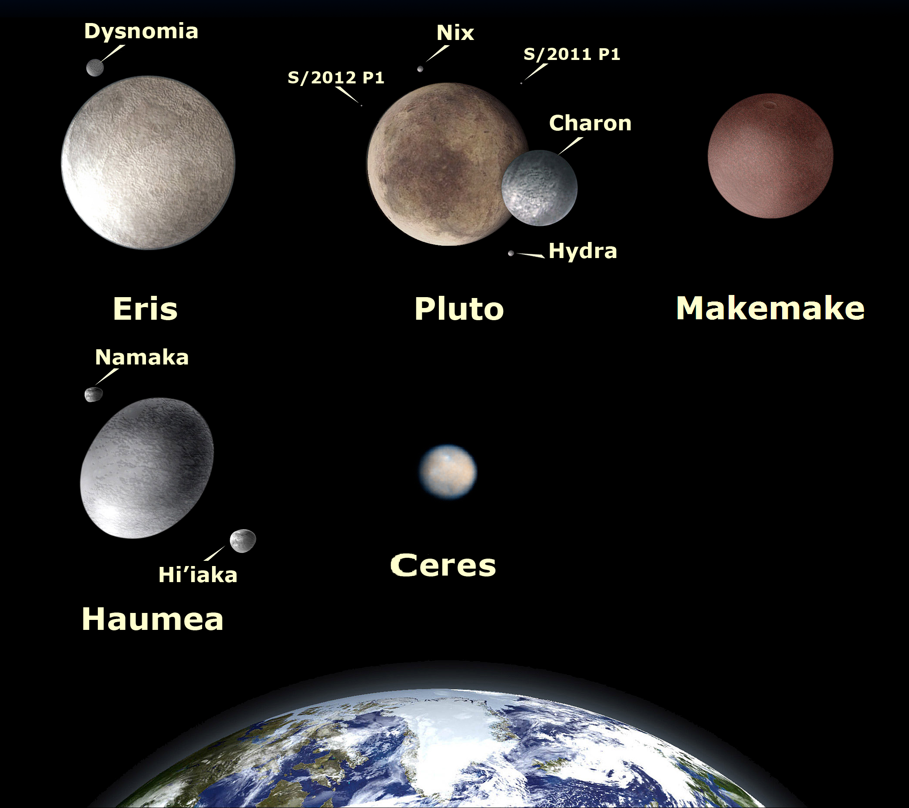

DWARF PLANETS
Pluto is the most well-known example of a dwarf planet, but there are many other "mini worlds" out there!
WHAT IS A DWARF PLANET?
- Between 1930 (the year Pluto was discovered) and 2006, there were 9 known planets in the Solar System: Mercury, Venus, Earth, Mars, Jupiter, Saturn, Uranus, Neptune, and Pluto (in order of increasing distance from the Sun.) However, in August 2006, the International Astronomical Union (IAU) "downgraded" Pluto to the status of a so-called "Dwarf planet" leaving only 8 planets.
- The reason for the downgrade has to do with what precisely makes a planet a "planet" in the first place. (Discussion here, if you're interested.)
- So dwarf planets are like planets in many respects - they orbit the Sun and are massive enough for their own gravity to force them into an "ellipsoid" (put simply "round-ish") shape - but they are smaller than planets, and typically orbit at a distance further from the Sun (with the exception of Ceres, which is found in the Asteroid Belt between the orbits of Mars and Jupiter.) Lots of people refer to dwarf planets as "mini worlds" which is essentially what they are.
- Of course the most (in)famous example of a dwarf planet is Pluto - though it is not the only one! We know well of five dwarf planets (including Pluto), though it is believed that many more exist in the Solar System!

Comparison of the five identified dwarf planets: Eris, Pluto, Makemake, Haumea, and Ceres. JorisvS, CC BY-SA 3.0, via Wikimedia Commons.
PLUTO
Pluto is a dwarf planet. Before 2006, it was considered the ninth planet from the Sun. It is a distant, icy world.
Little was known about Pluto before NASA's New Horizons probe flew by in 2015. Before then we couldn't get any clear images simply because Pluto is so far away.
It takes Pluto 248 Earth years to complete a single orbit of the Sun!
It was discovered in February 1930 by an American astronomer named Clyde Tombaugh
Its gravity is very weak indeed, at only 0.07 times that of Earth
It is REALLY far away from the Sun (3.7 billion miles, or 39 astronomical units, on average) so it is REALLY cold (between -226 and -240 degrees Celsius)
Sometimes, it is actually closer to us than Neptune! (This is due to the so-called "eccentricity" of its orbit: you can imagine Pluto going round the Sun not in a circular fashion, but in a stretched out ellipse: like a highly stretched rubber band)
Its surface has plenty of geological features, including some mountains 10,000 feet tall!
It has a moon called Charon which is almost half the size of Pluto itself - spectacularly big for a moon in comparison to its planet!
Looking at an image of Pluto we see it is certainly not dull, but has some striking shades of whites, blues, and deep crimsons (reds). We have chemistry to thank for these beautiful colours - in Pluto's atmosphere, there are gases such as methane and nitrogen. It is thought that when ultraviolet rays from the Sun strike these gases, organic (carbon-based) compounds are formed, which then come to rest on the surface ice. It is the colour of these compounds that we are seeing on Pluto's surface.
Let us now ask the question: Is there a chance for life to exist on Pluto?
Human colonisation of Pluto (us living there one day?) - not a chance. (Much too distant, unforgivably cold temperatures, lack of oxygen, weak gravity, etc.)
But! For the optimists among us, it is worth mentioning the Tombaugh ("Tom-b-aw") region (named after Clyde Tombaugh.) Here there is some evidence that there could be a subsurface slushy ice ocean, and where there is water... there can be life. But it's unlikely!
_(cropped).jpg)